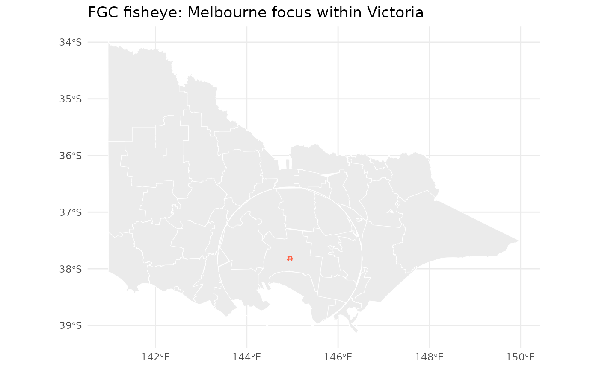
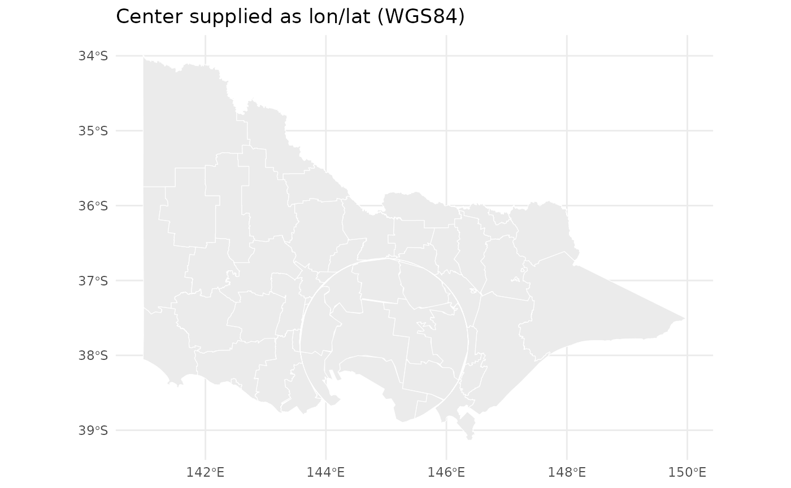
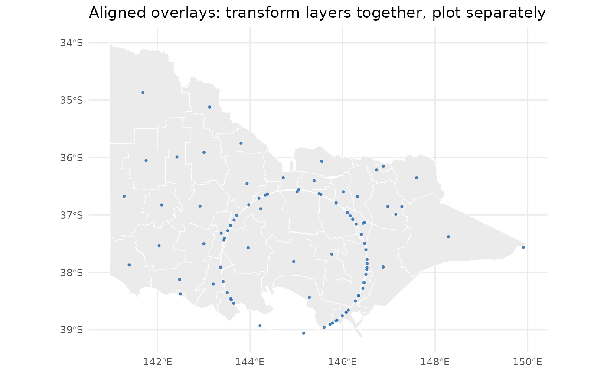
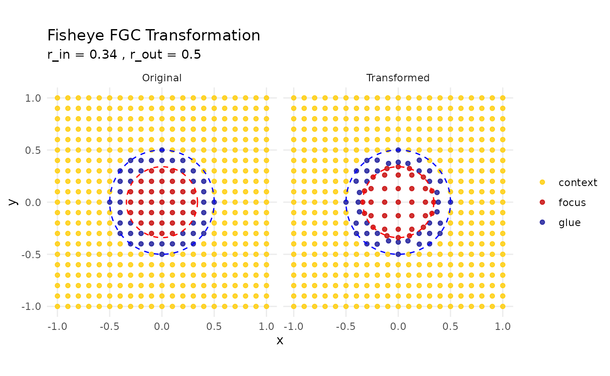

tune parameters, and align
m{r, include = FALSE} knitr::opts_chunk$set( collapse = TRUE, comment = "#>" )
## Overview
mapycusmaximus implements a projection-aware, vector-geometry fisheye
based on the Focus-Glue-Context (FGC) model. The transform magnifies a
chosen focus (inner radius r_in), transitions smoothly
through a glue ring (r_out), and preserves the outer
context. It is provided at two levels:
-
fisheye_fgc()— numeric coordinates (matrix) with diagnostics -
sf_fisheye()—sf/sfcobjects with CRS handling and normalization
This vignette shows how to apply the fisheye to common
sf layers, ultiple layers for a single figure.
Setup
## Linking to GEOS 3.12.1, GDAL 3.8.4, PROJ 9.4.0; sf_use_s2() is TRUE
library(ggplot2)
library(mapycusmaximus)
theme_set(ggplot2::theme_minimal())The package ships example data:
-
vic: Victoria LGA polygons (projected) -
vic_fish: fisheye-distortedvic(for reference examples) -
conn_fish: sample transfer lines (already warped in data preparation)
Quick start: warp a polygon layer
sf_fisheye() chooses a sensible projected working CRS
and normalizes coordinates around a center. With
preserve_aspect = TRUE (default), radii are interpreted in
unit-like space (≈ fraction of the layer’s half-span).
# Focus near a supplied geometry: use the centroid of the combined Melbourne polygon
melbourne <- vic[vic$LGA_NAME == "MELBOURNE", ]
vic_fisheye_demo <- sf_fisheye(
vic,
center = melbourne, # accept sf/sfc; centroid is used in working CRS
r_in = 0.34, r_out = 0.60,
zoom_factor = 15,
squeeze_factor = 0.35,
method = "expand",
revolution = 0
)
ggplot() +
geom_sf(data = vic_fisheye_demo, fill = "grey92", color = "white", linewidth = 0.2) +
geom_sf(data = melbourne, fill = NA, color = "tomato", linewidth = 0.5) +
ggtitle("FGC fisheye: Melbourne focus within Victoria")
Choosing a center
You may supply the focus center in several ways:
- As a geometry:
center = melbourne(centroid of the combined geometry) - As lon/lat:
center = c(144.9631, -37.8136),center_crs = "EPSG:4326" - As map units (working CRS):
center = c(x, y) - As normalized coordinates in
[-1, 1]:normalized_center = TRUE
# Example: WGS84 center (Melbourne CBD), auto-project to a working CRS
vic_cbd <- sf_fisheye(
vic,
center = c(144.9631, -37.8136),
center_crs = "EPSG:4326",
r_in = 0.30, r_out = 0.55,
zoom_factor = 15, squeeze_factor = 0.30
)
ggplot(vic_cbd) +
geom_sf(fill = "grey92", color = "white", linewidth = 0.2) +
ggtitle("Center supplied as lon/lat (WGS84)")
Aligning multiple layers
To keep overlays aligned, apply the exact same fisheye parameters to each layer and ensure they share the same working CRS and normalization. A robust pattern is to bind layers together, transform once, then split for plotting; this guarantees a common bounding box for normalization.
centroids <- st_centroid(vic)## Warning: st_centroid assumes attributes are constant over geometries
vic$layer <- "polygon"
centroids$layer <- "centroid"
both <- rbind(vic[, c("LGA_NAME", "geometry", "layer")],
centroids[, c("LGA_NAME", "geometry", "layer")])
both_fish <- sf_fisheye(both, center = melbourne,
r_in = 0.34, r_out = 0.60,
zoom_factor = 15, squeeze_factor = 0.35)
ggplot() +
geom_sf(data = both_fish[both_fish$layer == "polygon", ],
fill = "grey92", color = "white", linewidth = 0.2) +
geom_sf(data = both_fish[both_fish$layer == "centroid", ],
color = "#2b6cb0", size = 0.6, alpha = 0.8) +
ggtitle("Aligned overlays: transform layers together, plot separately")
If layers must be transformed separately, current per-layer
normalization can lead to slight radius mismatches. A practical
workaround is to compute a scale factor from a reference layer’s bbox
and multiply r_in/r_out accordingly, e.g.:
all_points <- sf_fisheye(all_points, center = melbourne,
zoom_factor = 1.8, squeeze_factor = 0.30)
scale_radii <- 1 - (((st_bbox(vic)["xmax"] - st_bbox(vic)["xmin"]) -
(st_bbox(all_points)["xmax"] - st_bbox(all_points)["xmin"])) /
(st_bbox(vic)["xmax"] - st_bbox(vic)["xmin"]))
vic_fisheye <- sf_fisheye(vic, center = melbourne,
r_in = 0.35 * scale_radii,
r_out = 0.50 * scale_radii,
zoom_factor = 1.8, squeeze_factor = 0.30)Future versions will expose a parameter object or
match_to argument so multiple layers can share
normalization and radii without manual scaling.
Diagnostics with numeric coordinates
Use create_test_grid() and
plot_fisheye_fgc() to understand the mapping in isolation
from GIS workflows.
grid <- create_test_grid(range = c(-1, 1), spacing = 0.1)
warp <- fisheye_fgc(grid, r_in = 0.34, r_out = 0.5,
zoom_factor = 1.3, squeeze_factor = 0.5)
plot_fisheye_fgc(grid, warp, r_in = 0.34, r_out = 0.5)
CRS and reproducibility tips
- Let
sf_fisheye()auto-select a working CRS for lon/lat inputs, or settarget_crsexplicitly for project standards. - Prefer
centeras ansf/sfcgeometry or as lon/lat withcenter_crsfor clarity. - Use
normalized_center = TRUEand fixed radii for small multiples across regions.